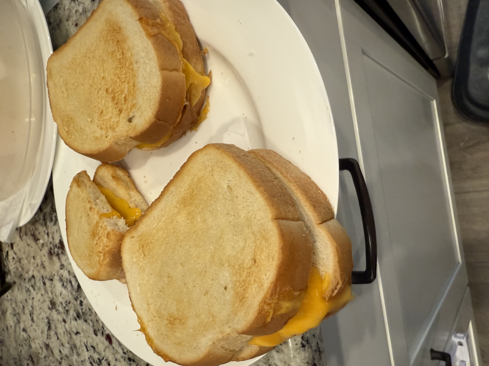
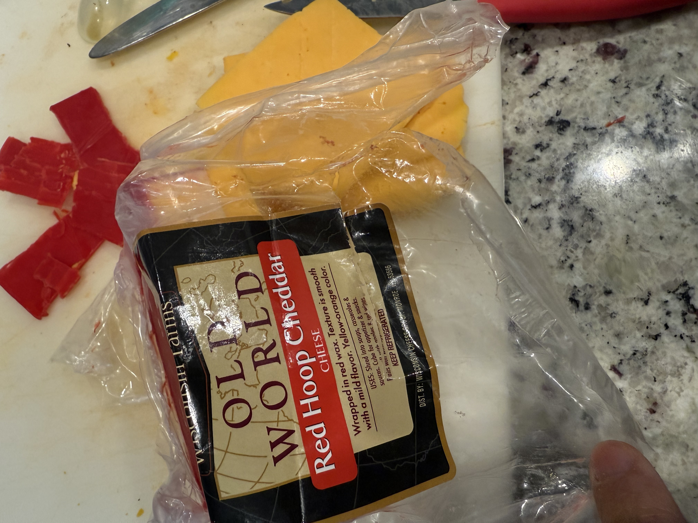
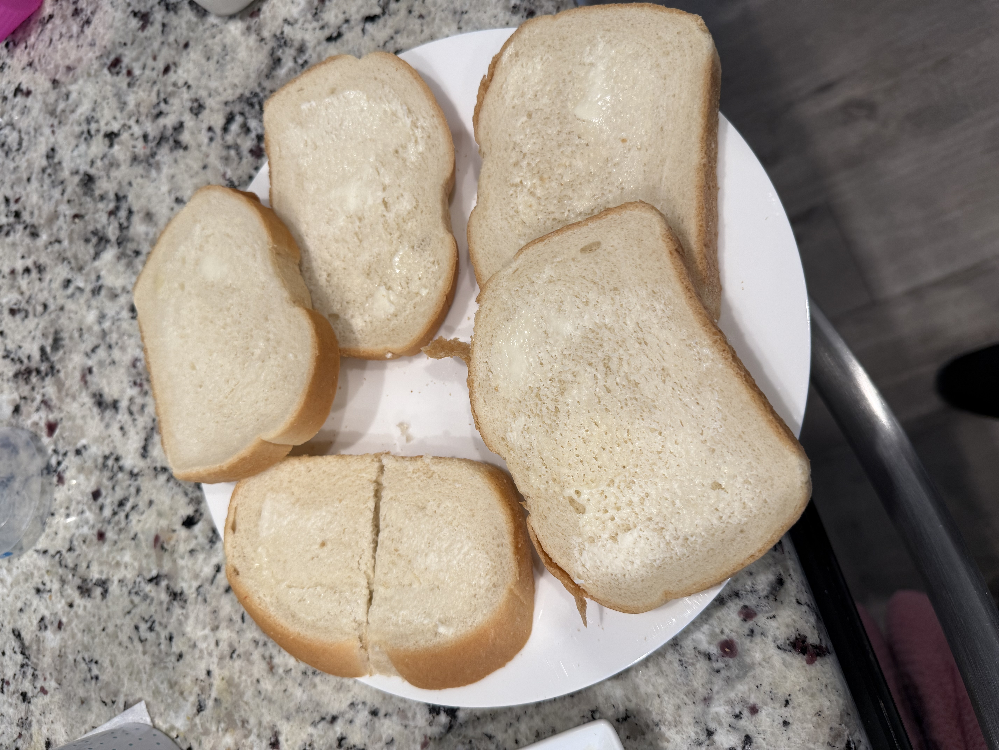
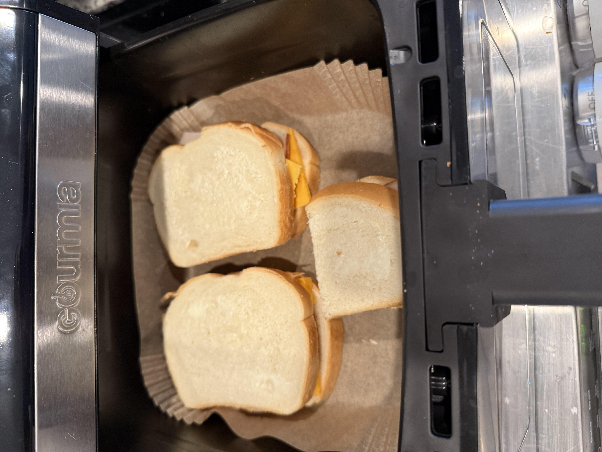

Home
Grill Cheese

The following recipe is my take on the original grill cheese. This is a sample snack that you and your family will love.
Best of all it specifically done within your air-fryer to limit the pots that need to be washed.
So no need to start your stove, just plug in your high tech air-fryer and follow along.
Ingredients
- Pepperidge farm italian white bread
- Butter, slightly melted for easy spreading
- Yellow cheese, I get Old World Red Hoop Cheddar cheese(from Costco)

Steps
- Take 1/4 butter and place it on a microwavable bowl. You may need more depending on how many sandwiches your making
- Warm it up for about 7 seconds. You don't want it be water liquified just melted enough where you can easily spread it
- Spread butter on both sides of each bread slice

- Chop your cheese into slices, don't make them to thin because you want to taste the cheese of course
- Make sure the cheese covers the whole slice
- Bring together the other bread slice and place on the air-fryer
Make sure you use a liner for your air-fryer so that it can be an easier clean up later
- Set air-fryer for 390
- Cook for 3 minutes on one side and 2 minutes when you flip
- Remove from air-fryer and cut diagonally only

You'll see that they are done once the bread has that nice brown color and the cheese is oozing a bit.
Side note
You can add a slice or two of your favorite ham in between the cheese to change it up a bit.
This adds a bit of protein to the meal. If you get the Pepperidge farm bread
it will also increase the amount of protein.